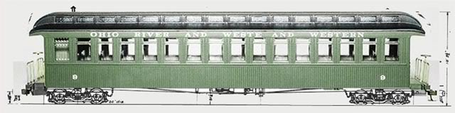

January 2006.
I am officially jumping
into a new scale! 
On2!
This new obsession of mine
began a few months ago, with an announcement on the
Bachmann
forum that Bachmann is planning to release new On30 models of Maine
2-foot forneys!!
This is potentially great
news for On2 modelers! but..there is one huge question as yet unanswered..will
these locomotives be able to be easily regauged from On30 to On2?
("easily" being a very subjective
term)
Bachmann will be releasing
them in On30 scale, (not that there is anything wrong with that)
to go with their rapidly
expanding line of On30 trains..
thats great for On30 modelers..but..I
dont want to model the Maine 2-footers and have them running on 2 and
1/2 foot gauge track! 
For me personally, if I
am going to jump into this new scale, it has to be "real 2-foot, or nothing"
meaning..real On2.
So, I started reading up
on On2, joined the Maine
On2 forum, and just started obsessing!
I have been modeling Maine
2-footers the last few years in 29n2
scale, so that I can model 2-footers along side my 1/29 scale standard
gauge trains, when I build my eventual outdoor garden railroad, (my wife
and I have just started the house-hunting process!)
But I was never even considering
jumping into an "indoor" scale again. (I used to model in HO, as a teenager
in the 80's) I thought I would be sticking to "Large Scale only"
pretty much for life..
so much for "the best laid
plans!"
I was planning on simply
waiting..waiting a year or two for the Bachmann On30 Maine forneys to come
out..THEN see how easily they can be regauged to On2. I was thinking "well..if
they can be somewhat easily regauged, then I will jump into On2..if not,
I might not bother at all."
that plan is gone! its too
late..im there!
The thing about regauging
is that anything CAN be regauged..it just depends on how much work you
are willing to put into it...it might not be "easy" at all..it could involve
scratchbuilding an entire new frame. But I have already regauged one
locomotive, (in 29n2 scale, not On2) so im not terribly worried
about these future Bachmann engines..it WILL be done! somehow...
hopefully Bachmann will
take On2 into account and design these engines to be fairly easily regauged.
(please Mr. Bachmann!)
they ARE 2-foot prototypes afterall!
Based on the recent
On30 consolidation, im sure these upcoming Maine engines will be fabulous!
So..I need to make a piece
of On2 rolling stock!
This will actually my second
On2 project.
I already built a Portland
Locomotive Works O-scale kit of the WW&F flagstop station, ordered
from Maine 2-foot Quarterly,
and its a beauty!
(my scratchbuilt 29n2 station
is on the left, O-scale PLW kit on the right.)
So lets jump into this coach
bash!!
First step..get 2 Bachmann
coaches and start measuring things up.
I'm going to take these 2
coaches, slice them up, and join bits of them together to make a
On2 Maine coach based on
the overall dimensions of SR&RL coach 22.
The Bachmann coaches need
to be reduced in height and width.
parts of the two coaches
joined together will give the correct length.
fortunately, the window
size works out well!
At first, I was planning
to build an actual, accurate model of SR&RL coach 22, (or as accurate
as I could make it! ;) but after some study of the Bachmann coaches, I
have instead decided to build more of a "freelance" Maine 2-foot coach
based on the overall dimensions of SR&RL 22.
The length, width and height
of the finished model will be accurate in On2 for coach 22,
the difference is going
to be in the windows..which I will explain below.
First, measure the coach,
and comapre to the dimensions of SR&RL 22 in O scale.
dimensions are in mm.

So the bachmann coach has
to be reduced 3mm in overall height.
and 6mm in overall width.
Using my good friend Photoshop,
I did some "digital kitbashing" to see how things would look.
Here are a few of the ideas
I considered:
Chop 2mm off the bottom,
and take 1 or 2mm out of the narrow, upper windows,
resulting in this:

looks pretty good! but im
not thrilled with still having those thin "top windows".
I would like to eliminate
those completely.
I would also like to have
the windows spaced like the real #22, with pairs of windows, and a thicker
post inbetween sets of double
windows..I considered cutting out every other post, expanding the height
of the window into the "top window", and replacing the cut-out center post
with a thinner post of styrene, resulting in this:
I like the look of that!
but...the Bachmann coaches are very nicely detailed (which is good!)
but the window detail is
complex..cutting away posts wouldnt be as simple as cutting out the post
and sticking in a narrow
strip of square stryene in its place..there are molded in details along
the top and bottom of each window that would have to be carved out and
smoothed out for the effect to work properly..thats a LOT of fiddly carving,
filing and sanding.. im not sure I could pull it off, so im dropping that
idea for now. and, the windows end up being a bit too large that way..both
in width and height.
I also considered ordering
new windows from Grandt Line, and scratchbuilding an entire new "window
strip"..then re-attach the top and bottom of the B-man coach to this new
strip of windows..
but that Bachmann window
detail is too nice not to keep.
So my current working plan
is this.
cut 1mm off the bottom.
that makes the "bottom panel" the correct 15mm in height.
then slice out 2 mm from
the top of the "thin windows"..but rather than keep the windows,
I will fill in that space,
creating a new thin strip running along the top of the windows.
I will probably then scratchbuild
a new "road name strip" across the top.
resulting in something like
this:
I like it!
the window size of the Bachmann
coach is already nearly perfect for the size of the SR&RL coach..
the trick is cutting and
pasting everything else around those windows.
the clerestory roof is a
tad too high on the Bachmann coach, but im not going to bother to try to
cut that down..
the roof will need to be
narrowed..at first I was thinking I would have to cut out a strip down
the middle and re-join the 2 sides..but the width of the clerestory is
fine,
so instead I can simply
shave off a few mm down both edges..which is much easier!
Because it wont be an "accurate"
coach 22, I will probably give it a fictional number, like coach 23 or
24. I dont like to give real prototype numbers to models unless they are
as accurate as they can be.
(hence Locomotive #25)
Trucks will be Coronado
scale models SR&RL passenger trucks.
and new end platforms and
steps will be scratchbuilt.
Thats everything as of 01/16/2006.
so far, no actual cutting
of plastic has been done!
thats next..tonight I will
take the cars apart..
UPDATE
January 23, 2006
this project requires a new
model making tool!
a mini table saw.
See this
thread for the ongoing saw saga.

Got the new SR&RL passenger
car trucks!
From Coronado Scale Models.
(and I ordered the specific
NWSL On2 wheelsets with the trucks)
The new On2 trucks
with the Bachmann On30 trucks.
The two coaches disassembled:

I made a surprising
and unexpected discovery while taking the coaches apart!
I have been stripping and
repainting model railroad shells since my HO scale days
back in the 80's..EVERY
shell I have ever worked with has been either, white,
grey, or black styrene underneath,
with the paint for whatever roadname painted over
the bare styrene.
I expected the same with
these On30 coaches!
I was suprised to discover
that the Orange of the Great Northern coach, and the Red of
the "Wonderland Express"
coach was NOT paint! 
instead, the GN coach is
molded in solid Orange plastic, and the Wonderland coach is molded
in solid RED plastic!! I
expected them to the same underneath..
(update..turns out the sides
were painted afterall! Red paint was painted on top of the red plastic
and orange paint was painted
on top of the orange plastic..
I stripped the paint with
"91% isopropyl alcohol" (rubbing alcohol) available at any drug store.
(use the 91%..its stronger)
I wasnt concerned with them
being different roadnames, because I would just strip the paint anyway..so
the roadname they came with would be irrelevant, because they would be
the same color of bare plastic underneath...or so I thought.
but now I have 2 different
colors of plastic!
oh well..it still shouldnt
be a problem, because I will prime the shells before painting anyway.
it was just a surprise!
I also wound up with with
2 different colors of clear plastic for the clerestory windows.
also unexpected!
one set clear, and one set
green.
anyone want to trade clerestory
windows?
I will trade green for clear,
or clear for green.
live and learn!
Here are the parts I plan
*not* to use in the new SR&RL coach.
the frames, interior and
trucks.
actually, I might try to
re-use the interiors..just so there are some seats showing
through the windows..even
though the 2-foot coaches had different seat arrangements.
and im going to try to salvage
the railings and truss rods..or get new ones, not sure yet.
And the parts that will be
used.
The sides, ends and roofs.

All apart!
Now I have to get that saw
up and running....
On
to Page 2
Scot
Lawrence.
Rochester,
NY
Page
started January 16, 2006.
sscotsman@yahoo.com
Back
to Scot's main page
|